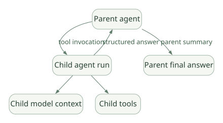

SECOND STUDY / History·Context·외부 확장
History·Context·외부 확장
이번 단원의 읽는 관점
보관 이력과 현재 입력을 나누고 압축·캐시·Skills·MCP·Child Loop를 연결합니다.
살펴볼 경계권한·메모리 자동 상속을 가정하지 말고 ToolCall/Return 쌍 보존을 확인하세요.
이 페이지의 세부 목차
20. Multi-Agent·Graph·오케스트레이션#
20.1 Multi-Agent는 'Tool 병렬'과 다르다#
- 병렬 Tool: 하나의 모델 응답에서 여러 Tool을 동시에 실행. 각각 독립 LLM Loop는 없음.
- Agent as Tool / Delegation: 부모 Agent가 다른 Agent를 Tool처럼 호출. 자식은 자신의 LLM Loop를 가질 수 있음.
- Workflow/Graph: 명시된 Node/Edge로 작업 순서를 제어.
- Background Agent: 별도 작업 수명·완료·회수 흐름을 가짐.
20.2 부모·자식 컨텍스트는 어떻게 다른가?#
가로로 이동해서 읽을 수 있습니다. 도식 크게 보기 ↗

원문의 학습용 도식입니다. 연결 방향·분기 조건·점선·쌍방향 연결을 보존해 세로로 배치했습니다. 실제 구현·의사코드·해석의 구분은 본문을 함께 읽으세요.
도식 원문 보기 (Mermaid)
flowchart TD
P[Parent agent] -->|tool invocation| C[Child agent run]
C --> MC[Child model context]
C --> TC[Child tools]
C -->|structured answer| P
P -->|parent summary| F[Parent final answer]부모가 가진 모든 Message/권한/Memory가 자동으로 자식에게 넘어간다고 가정하지 말아야 한다. 어떤 Dependencies를 넘길지, 자식 결과를 어떻게 요약할지, 자식도 Tool Side Effect를 실행할 수 있는지 개발자가 정해야 한다.
20.3 비동기 Subagent가 실제로 만드는 문제#
- Child가 실패하면 Parent를 멈출 것인지?
- Child별 토큰·시간·Tool 횟수 상한을 어떻게 정할 것인지?
- 자식의 Cancellation이 하위 외부 작업을 종료하는지?
- Child Result가 변경된 최신 데이터인지?
- 여러 자식의 출력 Schema가 서로 충돌하면 누가 Arbitration을 할지?
- Child의 Approval Request를 Parent 또는 사용자에게 어떻게 전달할지?
이는 단순히 asyncio.gather()를 호출하는 것만으로 해결되지 않는다.
20.4 Pydantic Graph와 Agent Loop의 구분#
- 내부 Agent Graph: 모델 호출과 Tool 결과의 반복 처리 엔진.
- Pydantic Graph: 개발자가 도메인 Workflow를 직접 선언할 수 있는 별도 구조.
- PydanticAI Multi-Agent 패턴: Agent를 Tool이나 함수 호출로 조합하는 방식.
- Harness Coder/Researcher: 특정 용도에 맞춰 Capabilities와 위임을 패키징한 Higher-level 시스템.
공식 참고: Multi-Agent Patterns, Pydantic Graph, Harness.